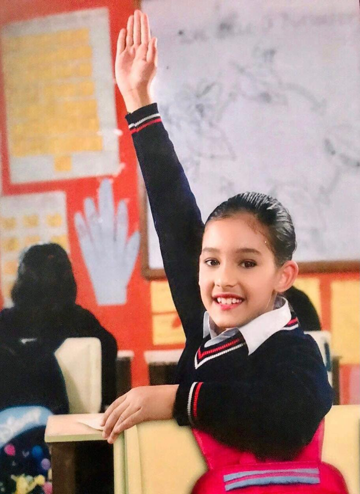

CAREER OBJECTIVE
Looking forward to work as a professional in the field of Artificial Intelligence and contribute in innovative ideas and being part of the change.
Personal Profile
A fresher eager to learn and explore computer knowledge with a practical approach to problem solving and drive to see things through to completion.
EDUCATION
Sikkim Manipal Institute of Technology
Pursuing my studies in B.Tech-IT (2020-2024)
WORK EXPERIENCE
1. Member of Executive Club INNOVISION, SMIT
2. Team lead in junior Executive Club
3. Associated with various social organization like the Interact Club of Chelsea, Youth's UNESCO Club Kathmandu, United World School Nepal.